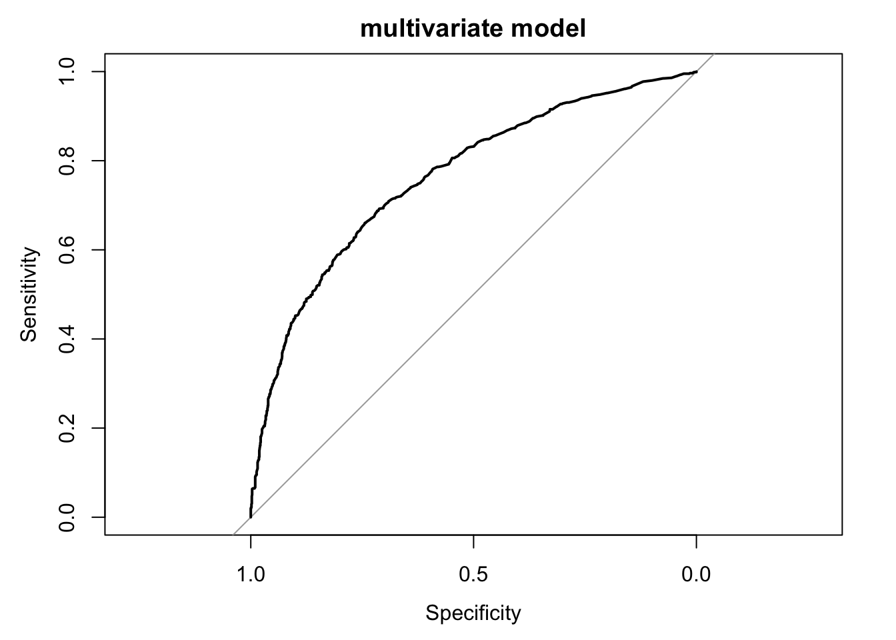

Assignments for prognostic research
Wouter van Amsterdam
2018-03-13
Last updated: 2018-03-15
Code version: 17a4738
Setup R
library(dplyr)
library(data.table)
library(magrittr)
library(purrr)
library(here) # for tracking working directory
library(ggplot2)
library(epistats)
library(broom)Day 2. model development 1
This excercise was intented for SPSS
In this practical exercise we will study the prognosis of patients with traumatic brain injury. We will assess the individual prognostic strength in univariable and multivariable analyses. The aim of the multivariable analysis is to adjust for correlation between prognostic factors, either to adjust for confounding (1) or to predict the prognosis with multiple predictors (2). The data are in SPSS format: “TBI.sav”. See below for a description of the dataset.
Data set traumatic brain injury (TBI.sav, n=2159) Patients are from the International and US Tirilazad trials; distributed here for didactic purposes only. The primary outcome was 6 months Glasgow Outcome Scale (range 1 to 5).
Name Description (coding: no/yes is coded as 0/1) Development (n=2159) Trial Study identification: 74 = Tirilazad international (n=1118) 75 = US (n=1041)
52% 48% d.gos Glasgow Outcome Scale at 6 months: 1 = dead 2 = vegetative 3 = severe disability 4 = moderate disability 5 = good recovery
23% 4% 12% 16% 44% d.mort Mortality at 6 months (0/1) 23% d.unfav Unfavorable outcome at 6 months (0/1) 39% cause Cause of injury 3 = Road traffic accident 4 = Motorbike 5 = Assault 6 = Domestic/fall 9 = Other
39% 20% 6% 17% 18% age Age, in years (median [interquartile range]) 29 [21 - 42] d.motor Admission motor score, range: 1 - 6 (median) 4 d.pupil Pupillary reactivity 1=both reactive 2=one reactive 3= no reactive pupils
70% 14% 16% pupil.i Single imputed pupillary reactivity, 1;2;3 70%/14%/16% hypoxia Hypoxia before / at admission, 1=yes 22% hypotens Hypotension before / at admission, 1=yes 19% ctclass Marshall CT classification, 1 - 6 (median) 2 tsah tSAH at CT, 1=yes 46% edh EDH at CT, 1=yes 13% cisterns Compressed cisterns at CT, 0=no;1=slightly;2=fully 57%/26%/10% shift Midline shift > 5 mm at CT, 1=yes 18% glucose Glucose at admission, mmol/l (median [interquartile range]) 8.2 [6.7 - 10.4] glucoset ph Truncated glucose values (median [interquartile range]) pH (median [interquartile range]) 8.2 [6.7 - 10.4] 7.4 [7.3 - 7.5] sodium Sodium, mmol/l (median [interquartile range]) 140 [137 - 142] sodiumt Truncated sodium (median [interquartile range]) 140 [137 - 142] hb Hb, g/dl (median [interquartile range]) 12.8 [10.9 - 14.3] hbt Truncated hb (median [interquartile range]) 12.8 [10.9 - 14.3] * d. variables denoted ‘derived’.
Exercises
Load in data
require(haven)
tbi <- read_spss(here("data", "TBI.sav"))
str(tbi)Classes 'tbl_df', 'tbl' and 'data.frame': 2159 obs. of 24 variables:
$ trial :Class 'labelled' atomic [1:2159] 74 74 74 74 ...
.. ..- attr(*, "label")= chr "Study identification"
.. ..- attr(*, "format.spss")= chr "A6"
.. ..- attr(*, "display_width")= int 4
.. ..- attr(*, "labels")= Named chr [1:2] "74" "75"
.. .. ..- attr(*, "names")= chr [1:2] "Tirilazad International" "Tirilazad US"
$ d.gos :Class 'labelled' atomic [1:2159] 5 5 5 4 5 5 5 5 5 5 ...
.. ..- attr(*, "label")= chr "GOS at 6 months"
.. ..- attr(*, "format.spss")= chr "F2.0"
.. ..- attr(*, "labels")= Named num [1:5] 1 2 3 4 5
.. .. ..- attr(*, "names")= chr [1:5] "dead" "vegetative" "severe disability" "moderate disability" ...
$ d.mort : atomic 0 0 0 0 0 0 0 0 0 0 ...
..- attr(*, "label")= chr "Mortality at 6 months"
..- attr(*, "format.spss")= chr "F2.0"
$ d.unfav : atomic 0 0 0 0 0 0 0 0 0 0 ...
..- attr(*, "label")= chr "Unfavorable outcome at 6 months"
..- attr(*, "format.spss")= chr "F2.0"
$ cause :Class 'labelled' atomic [1:2159] 4 4 6 4 4 4 3 4 4 6 ...
.. ..- attr(*, "label")= chr "Cause of injury recoded"
.. ..- attr(*, "format.spss")= chr "F2.0"
.. ..- attr(*, "display_width")= int 10
.. ..- attr(*, "labels")= Named num [1:5] 3 4 5 6 9
.. .. ..- attr(*, "names")= chr [1:5] "Road traffic accident" "Motorbike" "Assault" "domestic/fall" ...
$ age : atomic 14 14 14 14 14 14 14 14 14 14 ...
..- attr(*, "label")= chr "Age in years"
..- attr(*, "format.spss")= chr "F2.0"
$ d.motor : atomic 5 4 4 4 5 3 5 5 4 5 ...
..- attr(*, "label")= chr "Admission motor score"
..- attr(*, "format.spss")= chr "F2.0"
$ d.pupil :Class 'labelled' atomic [1:2159] 1 1 1 1 1 1 1 1 1 2 ...
.. ..- attr(*, "label")= chr "Pupillary reactivity"
.. ..- attr(*, "format.spss")= chr "F2.0"
.. ..- attr(*, "labels")= Named num [1:3] 1 2 3
.. .. ..- attr(*, "names")= chr [1:3] "both reactive" "one reactive" "no reactive pupils"
$ pupil.i :Class 'labelled' atomic [1:2159] 1 1 1 1 1 1 1 1 1 2 ...
.. ..- attr(*, "label")= chr "Single imputed pupillary reactivity"
.. ..- attr(*, "format.spss")= chr "F2.0"
.. ..- attr(*, "labels")= Named num [1:3] 1 2 3
.. .. ..- attr(*, "names")= chr [1:3] "both reactive" "one reactive" "no reactive pupils"
$ hypoxia : atomic 0 0 1 0 0 0 0 0 0 0 ...
..- attr(*, "label")= chr "Hypoxia before / at admission"
..- attr(*, "format.spss")= chr "F2.0"
$ hypotens: atomic 0 0 0 0 0 0 0 0 0 0 ...
..- attr(*, "label")= chr "Hypotension before / at admission"
..- attr(*, "format.spss")= chr "F2.0"
$ ctclass : atomic 2 2 4 2 2 2 2 2 2 1 ...
..- attr(*, "label")= chr "CT classification according to Marshall"
..- attr(*, "format.spss")= chr "F2.0"
$ tsah : atomic 0 0 1 0 0 NA 1 1 NA 0 ...
..- attr(*, "label")= chr "tSAH at CT"
..- attr(*, "format.spss")= chr "F2.0"
$ edh : atomic 0 0 0 0 0 0 0 0 0 0 ...
..- attr(*, "label")= chr "EDH at CT"
..- attr(*, "format.spss")= chr "F2.0"
$ cisterns: atomic 1 1 NA 1 1 1 1 2 1 1 ...
..- attr(*, "label")= chr "Compressed cisterns at CT"
..- attr(*, "format.spss")= chr "F2.0"
$ shift : atomic 0 0 NA 1 0 0 0 1 0 0 ...
..- attr(*, "label")= chr "Midline shift > 5 mm at CT"
..- attr(*, "format.spss")= chr "F2.0"
$ d.sysbpt: atomic 119 131 136 137 138 ...
..- attr(*, "label")= chr "Systolic blood pressure (truncated, mm Hg)"
..- attr(*, "format.spss")= chr "F4.0"
$ glucose : atomic 7.7 7.4 7.56 5.7 6 ...
..- attr(*, "label")= chr "Glucose at admission (mmol/l)"
..- attr(*, "format.spss")= chr "F4.2"
$ glucoset: atomic 7.7 7.4 7.56 5.7 6 ...
..- attr(*, "label")= chr "Truncated glucose values"
..- attr(*, "format.spss")= chr "F4.2"
$ ph : atomic 7.35 7.33 7.49 NA NA ...
..- attr(*, "label")= chr "pH"
..- attr(*, "format.spss")= chr "F4.2"
$ sodium : atomic 143 143 141 144 142 138 141 135 137 137 ...
..- attr(*, "label")= chr "Sodium (mmol/l)"
..- attr(*, "format.spss")= chr "F4.1"
$ sodiumt : atomic 143 143 141 144 142 138 141 135 137 137 ...
..- attr(*, "label")= chr "Truncated sodium"
..- attr(*, "format.spss")= chr "F4.1"
$ hb : atomic 15 15 12.8 7.1 8.5 12.3 12.8 9.2 12.8 11 ...
..- attr(*, "label")= chr "hb (g/dl)"
..- attr(*, "format.spss")= chr "F4.1"
$ hbt : atomic 15 15 12.8 7.1 8.5 12.3 12.8 9.2 12.8 11 ...
..- attr(*, "label")= chr "Truncated hb"
..- attr(*, "format.spss")= chr "F4.1"Coerce labelled variables into factors, as R works with factors and labelled variables are foreign to R.
Use the package haven with the function as_factor to get this done while preserving factor labels.
tbi %<>%
mutate_if(is.labelled, as_factor)
str(tbi)Classes 'tbl_df', 'tbl' and 'data.frame': 2159 obs. of 24 variables:
$ trial : Factor w/ 2 levels "Tirilazad International",..: 1 1 1 1 1 1 1 1 1 1 ...
..- attr(*, "label")= chr "Study identification"
$ d.gos : Factor w/ 5 levels "dead","vegetative",..: 5 5 5 4 5 5 5 5 5 5 ...
..- attr(*, "label")= chr "GOS at 6 months"
$ d.mort : atomic 0 0 0 0 0 0 0 0 0 0 ...
..- attr(*, "label")= chr "Mortality at 6 months"
..- attr(*, "format.spss")= chr "F2.0"
$ d.unfav : atomic 0 0 0 0 0 0 0 0 0 0 ...
..- attr(*, "label")= chr "Unfavorable outcome at 6 months"
..- attr(*, "format.spss")= chr "F2.0"
$ cause : Factor w/ 5 levels "Road traffic accident",..: 2 2 4 2 2 2 1 2 2 4 ...
..- attr(*, "label")= chr "Cause of injury recoded"
$ age : atomic 14 14 14 14 14 14 14 14 14 14 ...
..- attr(*, "label")= chr "Age in years"
..- attr(*, "format.spss")= chr "F2.0"
$ d.motor : atomic 5 4 4 4 5 3 5 5 4 5 ...
..- attr(*, "label")= chr "Admission motor score"
..- attr(*, "format.spss")= chr "F2.0"
$ d.pupil : Factor w/ 3 levels "both reactive",..: 1 1 1 1 1 1 1 1 1 2 ...
..- attr(*, "label")= chr "Pupillary reactivity"
$ pupil.i : Factor w/ 3 levels "both reactive",..: 1 1 1 1 1 1 1 1 1 2 ...
..- attr(*, "label")= chr "Single imputed pupillary reactivity"
$ hypoxia : atomic 0 0 1 0 0 0 0 0 0 0 ...
..- attr(*, "label")= chr "Hypoxia before / at admission"
..- attr(*, "format.spss")= chr "F2.0"
$ hypotens: atomic 0 0 0 0 0 0 0 0 0 0 ...
..- attr(*, "label")= chr "Hypotension before / at admission"
..- attr(*, "format.spss")= chr "F2.0"
$ ctclass : atomic 2 2 4 2 2 2 2 2 2 1 ...
..- attr(*, "label")= chr "CT classification according to Marshall"
..- attr(*, "format.spss")= chr "F2.0"
$ tsah : atomic 0 0 1 0 0 NA 1 1 NA 0 ...
..- attr(*, "label")= chr "tSAH at CT"
..- attr(*, "format.spss")= chr "F2.0"
$ edh : atomic 0 0 0 0 0 0 0 0 0 0 ...
..- attr(*, "label")= chr "EDH at CT"
..- attr(*, "format.spss")= chr "F2.0"
$ cisterns: atomic 1 1 NA 1 1 1 1 2 1 1 ...
..- attr(*, "label")= chr "Compressed cisterns at CT"
..- attr(*, "format.spss")= chr "F2.0"
$ shift : atomic 0 0 NA 1 0 0 0 1 0 0 ...
..- attr(*, "label")= chr "Midline shift > 5 mm at CT"
..- attr(*, "format.spss")= chr "F2.0"
$ d.sysbpt: atomic 119 131 136 137 138 ...
..- attr(*, "label")= chr "Systolic blood pressure (truncated, mm Hg)"
..- attr(*, "format.spss")= chr "F4.0"
$ glucose : atomic 7.7 7.4 7.56 5.7 6 ...
..- attr(*, "label")= chr "Glucose at admission (mmol/l)"
..- attr(*, "format.spss")= chr "F4.2"
$ glucoset: atomic 7.7 7.4 7.56 5.7 6 ...
..- attr(*, "label")= chr "Truncated glucose values"
..- attr(*, "format.spss")= chr "F4.2"
$ ph : atomic 7.35 7.33 7.49 NA NA ...
..- attr(*, "label")= chr "pH"
..- attr(*, "format.spss")= chr "F4.2"
$ sodium : atomic 143 143 141 144 142 138 141 135 137 137 ...
..- attr(*, "label")= chr "Sodium (mmol/l)"
..- attr(*, "format.spss")= chr "F4.1"
$ sodiumt : atomic 143 143 141 144 142 138 141 135 137 137 ...
..- attr(*, "label")= chr "Truncated sodium"
..- attr(*, "format.spss")= chr "F4.1"
$ hb : atomic 15 15 12.8 7.1 8.5 12.3 12.8 9.2 12.8 11 ...
..- attr(*, "label")= chr "hb (g/dl)"
..- attr(*, "format.spss")= chr "F4.1"
$ hbt : atomic 15 15 12.8 7.1 8.5 12.3 12.8 9.2 12.8 11 ...
..- attr(*, "label")= chr "Truncated hb"
..- attr(*, "format.spss")= chr "F4.1"1) Cause of injury
a)
Give the frequencies of the outcome (d.gos). What is the most commonly observed outcome?
tabl(tbi$d.gos)
dead vegetative severe disability
503 86 262
moderate disability good recovery <NA>
351 957 0 b)
Check the categorization in favorable vs unfavorable outcome (d.unfav variable). What is the overall risk of an unfavorable outcome? How was d.gos dichotomized?
tabl(tbi$d.gos, tbi$d.unfav)
0 1 <NA>
dead 0 503 0
vegetative 0 86 0
severe disability 0 262 0
moderate disability 351 0 0
good recovery 957 0 0
<NA> 0 0 0Overall risk of unfavorable outcome:
mean(tbi$d.unfav)[1] 0.394164c)
Give the frequencies of cause of injury. What is the most common cause of injury?
tabl(tbi$cause)
Road traffic accident Motorbike Assault
848 420 134
domestic/fall other <NA>
370 387 0 d)
Study the univariable effect of the prognostic factor ‘cause of injury’ on ‘unfavorable outcome’ (with crosstabs). What is the risk of an unfavorable outcome for each cause of injury? (use option
)
gmodels::CrossTable(tbi$cause, tbi$d.unfav, prop.chisq = F, prop.t = F, prop.c = F)
Cell Contents
|-------------------------|
| N |
| N / Row Total |
|-------------------------|
Total Observations in Table: 2159
| tbi$d.unfav
tbi$cause | 0 | 1 | Row Total |
----------------------|-----------|-----------|-----------|
Road traffic accident | 530 | 318 | 848 |
| 0.625 | 0.375 | 0.393 |
----------------------|-----------|-----------|-----------|
Motorbike | 277 | 143 | 420 |
| 0.660 | 0.340 | 0.195 |
----------------------|-----------|-----------|-----------|
Assault | 87 | 47 | 134 |
| 0.649 | 0.351 | 0.062 |
----------------------|-----------|-----------|-----------|
domestic/fall | 200 | 170 | 370 |
| 0.541 | 0.459 | 0.171 |
----------------------|-----------|-----------|-----------|
other | 214 | 173 | 387 |
| 0.553 | 0.447 | 0.179 |
----------------------|-----------|-----------|-----------|
Column Total | 1308 | 851 | 2159 |
----------------------|-----------|-----------|-----------|
e)
Quantify the effect with a logistic regression model.
Specify cause of injury as a categorical covariate.
Let’s make sure that ‘other’ is the reference category
tbi %<>% mutate(cause = relevel(cause, ref = "other"))fit <- glm(d.unfav ~ cause, data = tbi, family = binomial("logit"))
summary(fit)
Call:
glm(formula = d.unfav ~ cause, family = binomial("logit"), data = tbi)
Deviance Residuals:
Min 1Q Median 3Q Max
-1.1092 -0.9695 -0.9124 1.2690 1.4679
Coefficients:
Estimate Std. Error z value Pr(>|z|)
(Intercept) -0.21268 0.10224 -2.080 0.0375 *
causeRoad traffic accident -0.29814 0.12444 -2.396 0.0166 *
causeMotorbike -0.44849 0.14511 -3.091 0.0020 **
causeAssault -0.40308 0.20790 -1.939 0.0525 .
causedomestic/fall 0.05017 0.14607 0.343 0.7313
---
Signif. codes: 0 '***' 0.001 '**' 0.01 '*' 0.05 '.' 0.1 ' ' 1
(Dispersion parameter for binomial family taken to be 1)
Null deviance: 2895.5 on 2158 degrees of freedom
Residual deviance: 2877.0 on 2154 degrees of freedom
AIC: 2887
Number of Fisher Scoring iterations: 4By default SPSS will use the last category (‘Other’) as the reference category. Which causes give the highest risk of unfavorable outcome, and which the lowest risk, according to the regression result?
Motorbike is lowest, domestic/fall is highest. These match with the cross-table. Let’s look at the predicted probabilities for each category
cbind(levels(tbi$cause), predict(fit, newdata = data.frame(cause = levels(tbi$cause)),
type = "response")) [,1] [,2]
1 "other" "0.447028423772611"
2 "Road traffic accident" "0.375000000000002"
3 "Motorbike" "0.340476190476219"
4 "Assault" "0.350746268656731"
5 "domestic/fall" "0.459459459459461"f)
Verify that the intercept estimate in e) corresponds to the risk for the “Other” cause category as noted in d). Is the exp(intercept) an “odds ratio” or simply an “odds”?
With our fit the reference category is other
o_int = exp(coef(fit)[1])
o_int(Intercept)
0.8084112 To probability
o_int / (1 + o_int)(Intercept)
0.4470284 This matches the observed probability for other.
This is an actual ‘odds’
Verify also that the risk for the category “Domestic/fall” is only slightly higher than that of the “Other” cause category, both according to the crosstable (d)) and the regression result in e).
g)
Is the pattern of risk in d) and e) what you would expect? Can you think of confounders? Hint: What is the mean age for each cause of injury?
You would expect the risk for traffic accidents to be higher. Let’s include age in the summary
tbi %>%
group_by(cause) %>%
summarize(mean_age = mean(age), prop_unfavouroble = mean(d.unfav))# A tibble: 5 x 3
cause mean_age prop_unfavouroble
<fct> <dbl> <dbl>
1 other 35.1 0.447
2 Road traffic accident 29.5 0.375
3 Motorbike 31.4 0.340
4 Assault 35.3 0.351
5 domestic/fall 41.0 0.459Motorbike and traffic have low age and low unfavourable outcomes
h)
Now fit a multivariable model to adjust the effect of cause of injury for age.
fit2 <- glm(d.unfav ~ cause + age, data = tbi, family = binomial("logit"))
summary(fit2)
Call:
glm(formula = d.unfav ~ cause + age, family = binomial("logit"),
data = tbi)
Deviance Residuals:
Min 1Q Median 3Q Max
-1.6204 -0.9600 -0.8317 1.2374 1.7103
Coefficients:
Estimate Std. Error z value Pr(>|z|)
(Intercept) -1.318676 0.162146 -8.133 4.2e-16 ***
causeRoad traffic accident -0.129030 0.128343 -1.005 0.3147
causeMotorbike -0.350214 0.148844 -2.353 0.0186 *
causeAssault -0.421374 0.211557 -1.992 0.0464 *
causedomestic/fall -0.137041 0.151044 -0.907 0.3643
age 0.031325 0.003498 8.955 < 2e-16 ***
---
Signif. codes: 0 '***' 0.001 '**' 0.01 '*' 0.05 '.' 0.1 ' ' 1
(Dispersion parameter for binomial family taken to be 1)
Null deviance: 2895.5 on 2158 degrees of freedom
Residual deviance: 2794.1 on 2153 degrees of freedom
AIC: 2806.1
Number of Fisher Scoring iterations: 4This model did not fit, the residual deviance is higher than the degrees of freedom
1.
Is the effect of cause still statistically significant? Hint: focus on the overall p-value, based on a 4 df test.
We should take 6 degrees of freedom, as there are 6 parameters estimated
anova(fit2, test = "Chisq")Analysis of Deviance Table
Model: binomial, link: logit
Response: d.unfav
Terms added sequentially (first to last)
Df Deviance Resid. Df Resid. Dev Pr(>Chi)
NULL 2158 2895.5
cause 4 18.517 2154 2877.0 0.0009777 ***
age 1 82.926 2153 2794.1 < 2.2e-16 ***
---
Signif. codes: 0 '***' 0.001 '**' 0.01 '*' 0.05 '.' 0.1 ' ' 1Dropping cause will significantly decrease the goodness of fit, so yes.
2.
How do the effects of the different causes change?
require(tidyr)
fits <- list(without_age = fit, with_age = fit2)
fits %>%
map_df(tidy, .id = "model") %>%
select(estimate, model, term) %>%
spread(key = c("model"), value = "estimate") term with_age without_age
1 (Intercept) -1.31867601 -0.21268442
2 age 0.03132549 NA
3 causeAssault -0.42137365 -0.40307610
4 causedomestic/fall -0.13704111 0.05016549
5 causeMotorbike -0.35021397 -0.44848846
6 causeRoad traffic accident -0.12902965 -0.29814120Assault and domestic become lower risk, motorbike and road traffic higher risk
i)
What is your conclusion on the effect of “cause of injury”? Do you think “cause of injury” should be used for predictive purposes?
Based on these data, yes. However, when adding more covariates, this may change.
2) Prediction model: Risk of unfavourable outcome
We will now develop a simple prediction model with three predictors: motor score, pupillary reactivity and age.
a)
Give some descriptive statistics of motor score, pupillary reactivity and age.
tbi %>%
select(d.motor, d.pupil, age) %>%
summary() d.motor d.pupil age
Min. :1.000 both reactive :1430 Min. :14.00
1st Qu.:3.000 one reactive : 279 1st Qu.:22.00
Median :4.000 no reactive pupils: 327 Median :30.00
Mean :3.991 NA's : 123 Mean :33.21
3rd Qu.:5.000 3rd Qu.:43.00
Max. :6.000 Max. :79.00
- Assess the univariable effects of motor score, pupillary reactivity and age on the outcome (d.unfav) with a logistic regression model.
terms <- c("d.motor", "d.pupil", "age")
fits_uni <- terms %>%
map(function(term) glm(reformulate(term, "d.unfav"),
data = tbi, family = "binomial"))
names(fits_uni) <- terms
fits_uni %>%
map_df(tidy) term estimate std.error statistic
1 (Intercept) 2.27399375 0.177962699 12.777923
2 d.motor -0.68865430 0.044140229 -15.601512
3 (Intercept) -0.87071813 0.057980412 -15.017454
4 d.pupilone reactive 0.97834880 0.133192368 7.345382
5 d.pupilno reactive pupils 1.71947266 0.133912687 12.840252
6 (Intercept) -1.49482050 0.121854369 -12.267270
7 age 0.03161422 0.003328418 9.498274
p.value
1 2.178073e-37
2 7.109036e-55
3 5.643444e-51
4 2.051725e-13
5 9.755630e-38
6 1.357530e-34
7 2.133986e-21What is the univariable effect of age on the risk of unfavorable outcome?
exp(coef(fits_uni[["age"]]))(Intercept) age
0.2242889 1.0321193 What would be a good way to express the effect, using a linear scale? Hint: think of recoding age by decade.
tbi %<>%
mutate(age_cat = cut(age, breaks = seq(from = 10*floor(min(age / 10)),
to = 10*ceiling(max(age / 10)), by = 10)))
tbi %>%
glm(formula = d.unfav ~ age_cat, family = "binomial") %>%
summary()
Call:
glm(formula = d.unfav ~ age_cat, family = "binomial", data = .)
Deviance Residuals:
Min 1Q Median 3Q Max
-1.5829 -0.9244 -0.8640 1.1334 1.5273
Coefficients:
Estimate Std. Error z value Pr(>|z|)
(Intercept) -0.789162 0.106175 -7.433 1.06e-13 ***
age_cat(20,30] -0.003851 0.133811 -0.029 0.9770
age_cat(30,40] 0.313901 0.145060 2.164 0.0305 *
age_cat(40,50] 0.976200 0.155716 6.269 3.63e-10 ***
age_cat(50,60] 0.893522 0.174017 5.135 2.83e-07 ***
age_cat(60,70] 1.319790 0.253405 5.208 1.91e-07 ***
age_cat(70,80] 1.705453 0.843370 2.022 0.0432 *
---
Signif. codes: 0 '***' 0.001 '**' 0.01 '*' 0.05 '.' 0.1 ' ' 1
(Dispersion parameter for binomial family taken to be 1)
Null deviance: 2895.5 on 2158 degrees of freedom
Residual deviance: 2797.1 on 2152 degrees of freedom
AIC: 2811.1
Number of Fisher Scoring iterations: 4If the effect of age were linear (on the log-odds scale), there would be a constant difference between each consecutive category
Alternatively, we could plot the log-odds per age category
logit <- function(x) log(x / (1-x))
tbi %>%
group_by(age_cat) %>%
mutate(p_unfav = mean(d.unfav),
p_unfav_lo = binom.confint_logical(d.unfav)$lower,
p_unfav_hi = binom.confint_logical(d.unfav)$upper,
logit_unfav = logit(p_unfav),
logit_unfav_lo = logit(p_unfav_lo),
logit_unfav_hi = logit(p_unfav_hi)
) %>%
ggplot(aes(x = age_cat, ymin = logit_unfav_lo, y = logit_unfav, ymax = logit_unfav_hi)) +
geom_errorbar()
Linearity does not look too bad on logit scale.
I’m not sure whether calculating a confidence interval for the proportion and then transforming with logit is the best way to go.
c)
Now fit a multivariable model. Include in your model: motor score, pupillary reactivity and age (continuous). Note that there are missing values in the variable ‘d.pupil’, which have been filled in with a statistical imputation procedure in ‘pupil.i’. Perform the analyses twice: once with ‘pupillary reactivity’ including missing values (d.pupil) and once with missing values imputed (pupil.i). What are the numbers of patients in each analysis? Are there differences in prognostic effects?
fit_mis <- glm(d.unfav ~ d.motor + d.pupil + age, data = tbi, family = "binomial")
fit_imp <- glm(d.unfav ~ d.motor + pupil.i + age, data = tbi, family = "binomial")
fits <- list(with_missings = fit_mis, imputed = fit_imp)
fits %>%
map_df(tidy, .id = "model") %>%
select(model, term, estimate) %>%
spread(model, estimate) term imputed with_missings
1 (Intercept) 0.35269097 0.43316634
2 age 0.03818688 0.03835085
3 d.motor -0.60344181 -0.62470224
4 d.pupilno reactive pupils NA 1.28566748
5 d.pupilone reactive NA 0.56684531
6 pupil.ino reactive pupils 1.27120434 NA
7 pupil.ione reactive 0.59098094 NAThe estimate for age stays the same, for motor is a little different.
Overall the estimates are pretty much the same
fits %>% map_df("df.null") + 1 with_missings imputed
1 2036 2159d)
Can we interpret the change in age coefficient from univariable analysis to multivariable analysis if the number of subjects between the two analyses differ? Therefore: which variable for ‘pupillary reactivity’ do you prefer for modeling? Use this as the final multivariable model.
The number of missings is relatively low compare to the total number of observations (around 5%). If the missings are random and / or not associated with age or the outcome, the coefficients would not change. Precision decreases a little bit. Best would be to use the imputed variable, but difference will be small.
fits <- list(univariate = fits_uni[["age"]],
with_missings = fit_mis, imputed = fit_imp)
fits %>%
map_df(tidy, .id = "model") %>%
select(term, model, estimate) %>%
spread(model, estimate) term imputed univariate with_missings
1 (Intercept) 0.35269097 -1.49482050 0.43316634
2 age 0.03818688 0.03161422 0.03835085
3 d.motor -0.60344181 NA -0.62470224
4 d.pupilno reactive pupils NA NA 1.28566748
5 d.pupilone reactive NA NA 0.56684531
6 pupil.ino reactive pupils 1.27120434 NA NA
7 pupil.ione reactive 0.59098094 NA NAAnd for the p-value (precision):
fits %>%
map_df(tidy, .id = "model") %>%
select(term, model, p.value) %>%
spread(model, p.value) term imputed univariate with_missings
1 (Intercept) 1.214577e-01 1.357530e-34 6.789803e-02
2 age 5.853446e-25 2.133986e-21 2.955927e-23
3 d.motor 1.431263e-35 NA 2.731862e-35
4 d.pupilno reactive pupils NA NA 2.458664e-18
5 d.pupilone reactive NA NA 1.139903e-04
6 pupil.ino reactive pupils 2.407998e-19 NA NA
7 pupil.ione reactive 2.916081e-05 NA NAe)
How many missing values are imputed in the variable ‘pupil.i’? How many more cases can be analyzed by using ‘pupil.i’ rather than ‘d.pupil’?
See above
f)
The regression coefficients of the logistic model can be used to calculate the individual predicted risk of unfavorable outcome. Fit the model (as in d) again and use the option
. Note that your dataset (not the output screen) shows an extra column.
Predicted probabilities are stored in the R object
fit_imp$fitted.values[1:10] 1 2 3 4 5 6 7
0.1062243 0.1785122 0.1785122 0.1785122 0.1062243 0.2843433 0.1062243
8 9 10
0.1062243 0.1785122 0.1766922 g)
Look at the descriptives of the predicted risks. Is the range very narrow / reasonably wide?
summary(fit_imp$fitted.values) Min. 1st Qu. Median Mean 3rd Qu. Max.
0.06326 0.20825 0.34340 0.39416 0.54199 0.95926 Looks like it covers a whide range of the 0-1 interval
h)
If the model is well calibrated, groups of patients with low predicted risks will include only few patients with unfavorable outcomes; groups of patients with high predicted risks many. To check this, group the patients by predicted risk (use “recode into different variable”): 1: 0.00 - 0.15 2: 0.15 - 0.30 3: 0.30 - 0.40 4: 0.40 - 0.60 5: 0.60 - 1.00 Give the observed proportions of patients with unfavourable outcome for each group (use crosstabs with option cells, percentage).
Add predicted to data.frame
tbi %<>% mutate(
pred_unfav = fit_imp$fitted.values,
pred_unfav_cat = cut(pred_unfav, breaks = c(0, .15, .3, .4, .6, 1)))View results
tbi %>%
group_by(pred_unfav_cat) %>%
summarize(observed_prob = mean(d.unfav))# A tibble: 5 x 2
pred_unfav_cat observed_prob
<fct> <dbl>
1 (0,0.15] 0.135
2 (0.15,0.3] 0.227
3 (0.3,0.4] 0.314
4 (0.4,0.6] 0.487
5 (0.6,1] 0.766These line up OK
Let’s plot calibration
tbi %>%
mutate(pred_unfav_deciles = quant(pred_unfav, n.tiles = 10)) %>%
group_by(pred_unfav_deciles) %>%
summarize(observed_prob = mean(d.unfav),
observed_prob_lo = binom.confint_logical(d.unfav)$lower,
observed_prob_hi = binom.confint_logical(d.unfav)$upper) %>%
ggplot(aes(x = seq(0.05, .95, length.out = 10),
ymin = observed_prob_lo, ymax = observed_prob_hi,
y = observed_prob)) +
geom_errorbar() + geom_point() +
geom_abline(aes(slope = 1, intercept = 0), lty = 2) +
lims(y = c(0,1))
i)
Use the Hosmer-Lemeshow test to assess the calibration of the model as fitted in step d). By default, this test groups patients by deciles of risk. Does the test give a statistically significant result? Is that to be expected when a model is fitted and tested for fit in the same data?
ResourceSelection::hoslem.test(x = tbi$d.unfav, y = tbi$pred_unfav, g = 10)
Hosmer and Lemeshow goodness of fit (GOF) test
data: tbi$d.unfav, tbi$pred_unfav
X-squared = 5.1937, df = 8, p-value = 0.7367No rejection of null-hypothesis. Seems to fit OK.
Howerever the fit was based on the data, so this may be overfitted.
What do you think would happen with calibration at external validation, i.e. predictions are made for another data set?
Probably, calibration will be worse.
However, we have 851 cases, and fitted 5 degrees of freedom, so overfitting should be limited
j)
Study the discriminative ability of the model with the ROC curve. Use
. For comparison, make also a ROC curve for age alone as a single predictor.
logit_roc <- function(fit, add = F, ...) {
if (!("glm" %in% class(fit)) & fit$family$family == "binomial" & fit$family$link == "logit") {
stop("only works for glm fits with family = binomial(link = 'logit')")
}
formula0 = formula(fit)
all_vars = all.vars(formula0)
response = all_vars[1]
all_terms = all_vars[-1]
roc <- pROC::roc(fit$data[[response]], fit$fitted.values, ci = T)
pROC:::plot.roc.roc(roc, ci = T, add = add, ...)
}
logit_roc(fit_imp, main = "multivariate model")
logit_roc(fit_imp, main = "comparison with univariate model of only age")
logit_roc(fits_uni[["age"]], add = T)
k)
What would you expect for the area under the ROC-curve) if the model were applied in a new data set (external validation)?
A little worse.
What would you expect if the prognostic model is developed in a selection of patients with very narrow inclusion criteria with respect to important predictors such as age and motor score?
It will do a worse, since contrasts are smaller.
Day 3
The aim of this practical is to introduce you to some of the more commonly used techniques to perform shrinkage and validation. In this practical you will use R (SPSS doesn’t have sufficient functionality).
TBI revisited
Start R This practical can be done in R-studio. Once R-studio is started make sure you open a new R-script (File -> New File -> R script). Start your script by including the following code to load the appropriate R-packages (copy, paste and run (Control+R)):
dependencies
require(glmnet)
require(rms)
require(ggplot2)
require(logistf)If these packages haven’t been installed already, you may install them by using: install.packages(“package name”) Data The easiest way to work with data in R is to first assign a so-called working directory. For instance, if you want to use the folder: “H/prognostic_research/practical3”, you can use the following code:
setwd(“H:/prognostic_research/practical3”) We are going to use a slightly modified version of the Traumatic Brain Injury (TBI) data (TBIday3.RDS). If you haven’t done so already, download this data set (epidemiology-education.nl) and store it in your working directory. Then use these code lines to load these data in R and split it up into a development and a validation data set:
load development and validation data
tbi2 <- readRDS(here("data", "TBIday3.RDS"))
devdata <- tbi2[tbi2$trial=="Tirilazad US",-1]
valdata <- tbi2[tbi2$trial=="Tirilazad International",-1]Descriptive statistics
We are going to model mortality at 6 months (d.mort) as a function of ten prognostic factors: 1. age 2. hypoxia 3. hypotens 4. glucose 5. hb 6. d.sysbpt 7. edh 8. tsah 9. shift 10. pupil.dich (dichotomized to “both pupils reactive” (0) and “not both pupils reactive”" (1)). The definitions of these prognostic factor are found in the documents of the practical of day 2.
Q1: What are the numbers of events in both data sets? Are the numbers of events sufficient to warrant development and validation? Code:
table(devdata$d.mort)
0 1
816 225 table(valdata$d.mort)
0 1
840 278 Answer: The number of events in the development data is 225 and in the validation data is 278. There seems enough data for a validation study (>200 events). Given that we have 10 candidate predictors (and we assume no interaction or non-linear relationships with the outcome), EPV = 22.5 for development, which is higher than the often suggested minimum (EPV=10) but lower than EPV=50. One may therefore expect that these models may suffer from some level of overfitting, especially when variable selection strategies are employed.
Q2
Study the the distribution of the continuous predictor variables in the development data: age, glucose, hb and d.sysbpt. Are these variable normally distributed? If not: should we make adjustments? Code:
# ggplot(aes(age, colour = as.factor(d.mort)),data=devdata)+geom_density()
# ggplot(aes(glucose, colour = as.factor(d.mort)),data=devdata)+geom_density()
# ggplot(aes(hb, colour = as.factor(d.mort)),data=devdata)+geom_density()
# ggplot(aes(d.sysbpt, colour = as.factor(d.mort)),data=devdata)+geom_density()Or we can do:
pred_vars <- c("age", "hypoxia", "hypotens", "glucose", "hb", "d.sysbpt", "edh",
"tsah", "shift", "pupil.dich")
num_vars <- c("age", "glucose", "hb", "d.sysbpt")
resp_var <- c("d.mort")
tbi2 %>%
select(num_vars, resp_var) %>%
mutate(d.mort = factor(d.mort)) %>%
gather(-d.mort, key = "variable", value = "value") %>%
ggplot(aes(x = value, col = d.mort)) +
geom_density() +
facet_wrap(~variable, scales = "free")Answer: not all continuous predictor variables are normally distributed. There are, however, no direct assumptions made about the distribution of predictor variables in a logistic regression. No adjustments have to be made at this point.
Q3:
Look at the univariable associations between the d.mort and binary predictor variables in the development data. Make cross-tables. Code:
table(devdata$hypoxia,devdata$d.mort)
0 1
0 615 123
1 201 102table(devdata$hypotens,devdata$d.mort)
0 1
0 664 145
1 152 80table(devdata$edh,devdata$d.mort)
0 1
0 742 210
1 74 15table(devdata$tsah,devdata$d.mort)
0 1
0 505 86
1 311 139table(devdata$shift,devdata$d.mort)
0 1
0 698 166
1 118 59table(devdata$pupil.dich,devdata$d.mort)
0 1
0 602 99
1 214 126Develop prediction models by maximum likelihood
Q4
Develop a prediction model by maximum likelihood with all 10 predictors incorporated (no selection or shrinkage). What is the apparent area under the ROC curve (C statistic) for this model? Code:
# logistic regression model (Full model)
m1 <- d.mort~age+hypoxia+hypotens+glucose+hb+d.sysbpt+edh+tsah+shift+pupil.dich
full_model <- lrm(as.formula(m1),data=devdata,x=T,y=T)
full_modelLogistic Regression Model
lrm(formula = as.formula(m1), data = devdata, x = T, y = T)
Model Likelihood Discrimination Rank Discrim.
Ratio Test Indexes Indexes
Obs 1041 LR chi2 189.85 R2 0.257 C 0.774
0 816 d.f. 10 g 1.260 Dxy 0.548
1 225 Pr(> chi2) <0.0001 gr 3.524 gamma 0.548
max |deriv| 1e-10 gp 0.188 tau-a 0.186
Brier 0.136
Coef S.E. Wald Z Pr(>|Z|)
Intercept -0.2539 0.9437 -0.27 0.7879
age 0.0183 0.0065 2.80 0.0051
hypoxia 0.5319 0.1809 2.94 0.0033
hypotens 0.2444 0.2089 1.17 0.2421
glucose 0.0853 0.0235 3.63 0.0003
hb -0.0579 0.0416 -1.39 0.1638
d.sysbpt -0.0218 0.0058 -3.79 0.0002
edh -0.3965 0.3277 -1.21 0.2264
tsah 0.7960 0.1724 4.62 <0.0001
shift 0.7009 0.2039 3.44 0.0006
pupil.dich 0.9201 0.1713 5.37 <0.0001
Answer: the apparent C statistics is 0.774.
Q5
Now use step-wise backward selection with alpha = .05. What is the apparent area under the ROC curve (C statistic) of this model? Which variables are dropped from the model? How does it compare to the full model? Code:
# logistic regression model (backward selection)
selection <- fastbw(full_model,rule="p",sls=.05)
bw_model <- lrm(as.formula(paste("d.mort~",paste(selection$names.kept,collapse="+"))),data=devdata)
bw_modelLogistic Regression Model
lrm(formula = as.formula(paste("d.mort~", paste(selection$names.kept,
collapse = "+"))), data = devdata)
Model Likelihood Discrimination Rank Discrim.
Ratio Test Indexes Indexes
Obs 1041 LR chi2 183.73 R2 0.250 C 0.772
0 816 d.f. 7 g 1.226 Dxy 0.543
1 225 Pr(> chi2) <0.0001 gr 3.409 gamma 0.543
max |deriv| 3e-11 gp 0.185 tau-a 0.184
Brier 0.138
Coef S.E. Wald Z Pr(>|Z|)
Intercept -0.6634 0.7995 -0.83 0.4067
age 0.0201 0.0065 3.11 0.0019
hypoxia 0.5914 0.1774 3.33 0.0009
glucose 0.0946 0.0231 4.10 <0.0001
d.sysbpt -0.0252 0.0055 -4.60 <0.0001
tsah 0.7593 0.1706 4.45 <0.0001
shift 0.6492 0.2021 3.21 0.0013
pupil.dich 0.9359 0.1706 5.49 <0.0001
Answer: hypotens, edh and hb were deleted from the final model. The apparent C statistic of the final model is 0.771, very close to the apparent C statistic of the full model.
Perform internal validation using bootstrap Background Optimism (due to overfitting) can be investigated using the bootstrap. One bootstrap sample is a random sample with replacement of the original data. A bootstrap sample has the same dimensions, i.e. sample size, as the orginal data set. To study optimism: multiple bootstrap samples are generated (say, 1000 bootstrap samples). The prediction model is fitted on each of those samples. If variable selection is applied: this procedure is executed on each bootstrap sample. The predictive performance of these (final) bootstrap models are evaluated on the original data sample. The average of the bootrap performances provides an estimate of performance of the model in the original data sample that is corrected for optimism.
The above described bootstrap procedure is implemented in the validate function (rms library).
Q6
Perform an internal validation of the full model (Q4). For computational time reasons: take 200 bootstrap samples.
# internal validation full model
internalfull_model <- validate(full_model,B=200)
internalfull_model index.orig training test optimism index.corrected n
Dxy 0.5481 0.5628 0.5378 0.0250 0.5231 200
R2 0.2573 0.2709 0.2463 0.0246 0.2327 200
Intercept 0.0000 0.0000 -0.0693 0.0693 -0.0693 200
Slope 1.0000 1.0000 0.9367 0.0633 0.9367 200
Emax 0.0000 0.0000 0.0269 0.0269 0.0269 200
D 0.1814 0.1922 0.1729 0.0193 0.1621 200
U -0.0019 -0.0019 0.0010 -0.0029 0.0010 200
Q 0.1833 0.1941 0.1719 0.0222 0.1611 200
B 0.1365 0.1344 0.1385 -0.0041 0.1406 200
g 1.2596 1.3124 1.2232 0.0892 1.1704 200
gp 0.1876 0.1920 0.1835 0.0085 0.1791 200Q7
Calculate the optimism corrected C statistic for the full model. Make use of the fact that: C = (Dxy/2)+0.5.
internalfull_model[1,] / 2 + 0.5 index.orig training test optimism
0.7740577 0.7814089 0.7689249 0.5124840
index.corrected n
0.7615738 100.5000000 Answer: the bootstrap corrected estimate for the C statistic is about .762. This may vary slightly between executions because bootstrap sampling is a random process.
Q8
Perform an internal validation of the backward selection model. For computational time reasons: take 100 bootstrap samples. Hint: the selection must be executed on each bootstrap sample. Code:
# internal validation backward selection model
internvalbw_model <- validate(full_model,bw=T,rule="p",sls=.05,B=200)
Backwards Step-down - Original Model
Deleted Chi-Sq d.f. P Residual d.f. P AIC
hypotens 1.37 1 0.2421 1.37 1 0.2421 -0.63
edh 1.55 1 0.2135 2.92 2 0.2327 -1.08
hb 3.11 1 0.0776 6.03 3 0.1102 0.03
Approximate Estimates after Deleting Factors
Coef S.E. Wald Z P
Intercept -0.64942 0.801306 -0.8104 4.177e-01
age 0.01996 0.006477 3.0816 2.059e-03
hypoxia 0.58772 0.178144 3.2992 9.697e-04
glucose 0.09406 0.023146 4.0638 4.828e-05
d.sysbpt -0.02512 0.005497 -4.5691 4.898e-06
tsah 0.75275 0.171494 4.3893 1.137e-05
shift 0.64423 0.202169 3.1866 1.439e-03
pupil.dich 0.92939 0.171200 5.4287 5.677e-08
Factors in Final Model
[1] age hypoxia glucose d.sysbpt tsah shift
[7] pupil.dichinternvalbw_model index.orig training test optimism index.corrected n
Dxy 0.5432 0.5553 0.5277 0.0277 0.5155 200
R2 0.2497 0.2633 0.2369 0.0264 0.2233 200
Intercept 0.0000 0.0000 -0.0789 0.0789 -0.0789 200
Slope 1.0000 1.0000 0.9328 0.0672 0.9328 200
Emax 0.0000 0.0000 0.0297 0.0297 0.0297 200
D 0.1755 0.1868 0.1657 0.0211 0.1544 200
U -0.0019 -0.0019 0.0007 -0.0027 0.0007 200
Q 0.1775 0.1887 0.1650 0.0238 0.1537 200
B 0.1380 0.1364 0.1398 -0.0034 0.1414 200
g 1.2265 1.2781 1.1839 0.0942 1.1323 200
gp 0.1849 0.1905 0.1798 0.0107 0.1742 200
Factors Retained in Backwards Elimination
age hypoxia hypotens glucose hb d.sysbpt edh tsah shift pupil.dich
* * * * * * *
* * * * * * *
* * * * * *
* * * * *
* * * * * *
* * * * * *
* * * * * *
* * * * * * * *
* * * * * * *
* * * * * * *
* * * * * *
* * * * * * *
* * * * * * * *
* * * * * * *
* * * * *
* * * * * *
* * * * * * * *
* * * * * *
* * * * * * *
* * * * * * *
* * * * * *
* * * * * * *
* * * * * *
* * * * * * *
* * * * * * * *
* * * * * * *
* * * * * * *
* * * * * *
* * * * * * * *
* * * * * *
* * * * *
* * * * * *
* * * * * * *
* * * * * *
* * * * * * * *
* * * * * * * *
* * * * * *
* * * * * * *
* * * * * * *
* * * * * * * *
* * * * * * *
* * * * * * * *
* * * * * *
* * * * * * * * *
* * * * * * *
* * * * * * * *
* * * * * * * *
* * * * * * * * *
* * * * * * * *
* * * * * * *
* * * * * * * *
* * * * * * *
* * * * *
* * * * * * *
* * * * * * *
* * * * * * *
* * * * * * * *
* * * * * * * * *
* * * * *
* * * * * *
* * * * * * *
* * * * * * * *
* * * * * *
* * * * * *
* * * * * * *
* * * * * *
* * * * *
* * * * * * *
* * * * * *
* * * * * * *
* * * * * *
* * * * * * * *
* * * * * *
* * * * * * *
* * * * * *
* * * * * *
* * * * * * *
* * * * * * *
* * * * * * *
* * * * * *
* * * * * * *
* * * * * *
* * * * * * *
* * * * * * *
* * * * * * *
* * * * * * * *
* * * * * * * *
* * * * * * *
* * * * * * * *
* * * * * * * *
* * * * * * *
* * * * * * *
* * * * * *
* * * * * * * *
* * * * * *
* * * * * * *
* * * * * * * * *
* * * * * * *
* * * * * *
* * * * *
* * * * * * *
* * * * * * * *
* * * * * * *
* * * * * * * *
* * * * * * *
* * * * * *
* * * * * * *
* * * * * * * *
* * * * * * *
* * * * * * *
* * * * * * *
* * * * * * *
* * * * * * * *
* * * * * * *
* * * * * *
* * * * * *
* * * * * * *
* * * * * * * *
* * * * * *
* * * * * * * *
* * * * * * *
* * * * * * *
* * * * * * * *
* * * * * * * *
* * * * * * *
* * * * * * *
* * * * * * * *
* * * * * * *
* * * * * * *
* * * * * * * *
* * * * *
* * * * * * *
* * * * * * * *
* * * * * * *
* * * * *
* * * * * * *
* * * * * * *
* * * * * * * *
* * * * * * *
* * * * * *
* * * * * * * *
* * * * * * * *
* * * * * * *
* * * * * *
* * * * * * *
* * * * * * *
* * * * * * *
* * * * * * *
* * * * * * * *
* * * * *
* * * * * * *
* * * * * * * *
* * * * * * *
* * * * * * * *
* * * * * * *
* * * * * * *
* * * * * *
* * * * * * *
* * * * * *
* * * * * * *
* * * * * *
* * * * * * * *
* * * * * * * *
* * * * * * * *
* * * * * * * *
* * * * * * * * *
* * * * * * * *
* * * * * * * *
* * * * * *
* * * * * * *
* * * * *
* * * * * * *
* * * * * * * *
* * * * * * * *
* * * * * * *
* * * * * * *
* * * * * *
* * * * * * *
* * * * * * * *
* * * * * * *
* * * * * * *
* * * * * * * * *
* * * * * * *
* * * * * * *
* * * * * * * * *
* * * * * * * *
* * * * * * *
* * * * * * *
* * * * * * *
* * * * * * * *
* * * * * * *
* * * * * * *
* * * * * * *
* * * * * * *
* * * * * * * *
* * * * * * *
* * * * * *
* * * * * * * * *
* * * * *
* * * * * * *
Frequencies of Numbers of Factors Retained
5 6 7 8 9
12 41 89 50 8 Q9
Calculate the optimism corrected C statistic for the backward selection model.
internvalbw_model[1, ] / 2 + .5 index.orig training test optimism
0.7715795 0.7776680 0.7638259 0.5138421
index.corrected n
0.7577374 100.5000000 Answer: the bootstrap corrected estimate for the C statistic is about .756.
Q10
Does this internal validation exercise provide evidence of over- or underfitting? If so, which of these models are affected? Answer: the corrected calibration slopes (“Slope” in the output of the validation function) are around .942 (full model) and .928 (after backward selection). This indicates that the models suffer from some overfitting (Slope = 1 indicates no overfitting, Slope > 1 indicates underfitting).
Shrinkage using likelihood penalization
Background
maximum likelihood with or without stepwise selection is still the most commonly used approach for developing prediction models. However, it is long known that maximum likelihood estimation is not optimal for prediction purposes. For this, the maximum likelihood estimates need shrinkage.
Maximum likelihood estimation of the logistic model proceeds by maximizing the log-likelihood function: logL=∑iyilogπi+(1−yi)log(1−πi), where i stands for individual i, yi is the observed outcome for individual i and πi is the predicted outcome for individual i. There are several methods available to perform shrinkage. We here discuss three methods that are also known as penalized likelihood models. Each of these methods have the form: logL−p(⋅), where p(⋅) stands for a penalty function. Firth’s correction gives penalty: −1/2log|I(θ)|, where log|I(θ)| denotes the Fisher information matrix; Ridge gives penalty: p(⋅)=λ∑j=1β2j, where λ denotes a so-called tuning parameter and βj denotes regression coefficient j; and Lasso gives penalty p(⋅)=λ∑dfj=1|βj|. Estimating the tuning parameters (λ) for Lasso and Ridge is often done using a cross-validation approach. Details appear in a book called “The Elements of Statistical Learning” by Trevor Hastie et al.
Q11
Develop a model using Firth’s correction (all ten variables included). Compare the estimated regression coefficients to the full model (Q4). Code:
require(logistf)
# logistic regression model with Firth's correction (Full model)
firth_model <- logistf(as.formula(m1),data=devdata,firth=T)
firth_modellogistf(formula = as.formula(m1), data = devdata, firth = T)
Model fitted by Penalized ML
Confidence intervals and p-values by Profile Likelihood
coef se(coef) lower 0.95 upper 0.95 Chisq
(Intercept) -0.27013768 0.939190337 -2.101399116 1.57069188 0.08331424
age 0.01814908 0.006520080 0.005389062 0.03088027 7.74391852
hypoxia 0.52743276 0.180101206 0.173874221 0.87796228 8.49154615
hypotens 0.24459416 0.208049998 -0.165820246 0.64744970 1.37668381
glucose 0.08375997 0.023409911 0.038669281 0.13009905 13.35964125
hb -0.05700403 0.041403896 -0.138035973 0.02390951 1.90824278
d.sysbpt -0.02138948 0.005724866 -0.032728457 -0.01033559 14.60276525
edh -0.37102361 0.324303059 -1.035117305 0.23610654 1.39187602
tsah 0.78491191 0.171403312 0.451409218 1.12256368 21.42151200
shift 0.69423880 0.203061630 0.294512223 1.08807414 11.39642590
pupil.dich 0.90856021 0.170509291 0.575653707 1.24227119 28.38276217
p
(Intercept) 7.728553e-01
age 5.389373e-03
hypoxia 3.568005e-03
hypotens 2.406668e-01
glucose 2.570975e-04
hb 1.671586e-01
d.sysbpt 1.327197e-04
edh 2.380885e-01
tsah 3.686122e-06
shift 7.358554e-04
pupil.dich 9.954776e-08
Likelihood ratio test=188.3889 on 10 df, p=0, n=1041Answer: the coefficients are slightly ‘shrunken’ towards to zero effect as compared to the orignal full model estimated with maximum likelihood.
cbind(max_likelihood = coef(full_model), firth = coef(firth_model)) max_likelihood firth
Intercept -0.25394896 -0.27013768
age 0.01834929 0.01814908
hypoxia 0.53189103 0.52743276
hypotens 0.24443357 0.24459416
glucose 0.08526859 0.08375997
hb -0.05791975 -0.05700403
d.sysbpt -0.02179392 -0.02138948
edh -0.39645485 -0.37102361
tsah 0.79602655 0.78491191
shift 0.70091175 0.69423880
pupil.dich 0.92005534 0.90856021Q13
Develop a model using Ridge (all ten variables included). Compare the estimated regression coefficients to the full model (Q4). Note: estimating this model may take some time. Code:
# logistic Ridge regression model using leave-one-out cross-validation
ridge_tuning_parameter <-cv.glmnet(
x=as.matrix(devdata[,-1]),
y=as.matrix(devdata[,1]),
family="binomial",type.measure="mse",
alpha=0,nfolds=nrow(devdata))$lambda.minWarning: Option grouped=FALSE enforced in cv.glmnet, since < 3 observations
per foldridge_model <-glmnet(
x=as.matrix(devdata[,-1]),
y=as.matrix(devdata[,1]),
family="binomial",
lambda=ridge_tuning_parameter,alpha=0)Answer: the coeffients can be seen using coef(ridge_model). When compared to the full model estimated with maximum likelihood, these coefficients are shrunken.
cbind(max_likelihood = coef(full_model),
firth = coef(firth_model),
ridge = coef(ridge_model))11 x 3 sparse Matrix of class "dgCMatrix"
max_likelihood firth s0
(Intercept) -0.25394896 -0.27013768 -0.40058227
age 0.01834929 0.01814908 0.01616024
hypoxia 0.53189103 0.52743276 0.48558752
hypotens 0.24443357 0.24459416 0.25767463
glucose 0.08526859 0.08375997 0.07768179
hb -0.05791975 -0.05700403 -0.05604972
d.sysbpt -0.02179392 -0.02138948 -0.01870553
edh -0.39645485 -0.37102361 -0.31366884
tsah 0.79602655 0.78491191 0.69161047
shift 0.70091175 0.69423880 0.61588306
pupil.dich 0.92005534 0.90856021 0.82148405Q14
Develop a model using Lasso (all ten variables included). Note: estimating this model may take some time. Code:
# logistic Ridge regression model using leave-one-out cross-validation
lasso_tuning_parameter <- cv.glmnet(
x=as.matrix(devdata[,-1]),
y=as.matrix(devdata[,1]),
family="binomial",type.measure="mse",
alpha=1,nfolds=nrow(devdata))$lambda.minWarning: Option grouped=FALSE enforced in cv.glmnet, since < 3 observations
per foldlasso_model <-glmnet(
x=as.matrix(devdata[,-1]),
y=as.matrix(devdata[,1]),
family="binomial",
lambda=lasso_tuning_parameter,
alpha=1)# fits <- list(
# max_likelihood = (full_model),
# firth = (firth_model),
# ridge = (ridge_model),
# lasso = (lasso_model))
coef(lasso_model)11 x 1 sparse Matrix of class "dgCMatrix"
s0
(Intercept) -0.28116274
age 0.01786273
hypoxia 0.52155721
hypotens 0.23911329
glucose 0.08413384
hb -0.05593184
d.sysbpt -0.02140241
edh -0.36101560
tsah 0.78016590
shift 0.68173252
pupil.dich 0.90901921Answer: the coefficients can be seen using coef(lasso_model). Notice that, unlike ridge, Lasso may perform automated selection by shrinking some variables to zero.
External validation
Q15
study possible case-mix differences. Are there differences between the development and validation data? Example code
# compare case-mix between development and validation data
by(tbi2,tbi2$trial,function(x)colMeans(x[,-1]))tbi2$trial: Tirilazad International
d.mort age hypoxia hypotens glucose hb
0.2486583 33.6127013 0.1556351 0.1440072 8.6079944 11.8764758
d.sysbpt edh tsah shift pupil.dich
130.0886673 0.1681574 0.5277281 0.2262970 0.2754919
--------------------------------------------------------
tbi2$trial: Tirilazad US
d.mort age hypoxia hypotens glucose
0.21613833 32.78001921 0.29106628 0.22286263 9.22702530
hb d.sysbpt edh tsah shift
13.05240154 132.86975024 0.08549472 0.43227666 0.17002882
pupil.dich
0.32660903 by(tbi2,tbi2$trial,function(x)table(x$hypoxia))tbi2$trial: Tirilazad International
0 1
944 174
--------------------------------------------------------
tbi2$trial: Tirilazad US
0 1
738 303 ggplot(tbi2,aes(hb,colour=trial))+geom_density()Answer: yes, there are differences in case-mix. For instance, hypoxia is more common in the development data than in the validation data.
Or, using data.table
setDT(tbi2)
tbi2[, id := .I]
tbi2 %>%
data.table::melt(id.vars = c("trial", "id")) %>%
.[, list(mean = mean(value), sd = sd(value)), by = c("trial", "variable")] %>%
data.table::melt(id.vars = c("trial", "variable"),
variable.name = "measure", value.name = "value") %>%
data.table::dcast(variable~trial+measure) variable Tirilazad International_mean Tirilazad International_sd
1: d.mort 0.2486583 0.4324287
2: age 33.6127013 14.5212252
3: hypoxia 0.1556351 0.3626713
4: hypotens 0.1440072 0.3512541
5: glucose 8.6079944 3.5763887
6: hb 11.8764758 2.7624993
7: d.sysbpt 130.0886673 16.0103923
8: edh 0.1681574 0.3741734
9: tsah 0.5277281 0.4994540
10: shift 0.2262970 0.4186208
11: pupil.dich 0.2754919 0.4469618
Tirilazad US_mean Tirilazad US_sd
1: 0.21613833 0.4118075
2: 32.78001921 12.4776194
3: 0.29106628 0.4544723
4: 0.22286263 0.4163669
5: 9.22702530 3.4573085
6: 13.05240154 2.1583300
7: 132.86975024 15.5752142
8: 0.08549472 0.2797509
9: 0.43227666 0.4956304
10: 0.17002882 0.3758387
11: 0.32660903 0.4691983Q16
evaluate the predictive performance at external validiation Code
# external performance full model
predfull_model <- predict(full_model, newdata=valdata, type = "fitted")
val.prob(predfull_model,valdata$d.mort)
Dxy C (ROC) R2 D D:Chi-sq
5.613866e-01 7.806933e-01 2.626398e-01 1.940168e-01 2.179108e+02
D:p U U:Chi-sq U:p Q
NA 3.776862e-03 6.222531e+00 4.454454e-02 1.902400e-01
Brier Intercept Slope Emax E90
1.498881e-01 2.421173e-01 1.048814e+00 6.937963e-02 6.591928e-02
Eavg S:z S:p
2.628233e-02 1.519696e+00 1.285874e-01 # external performance backward selection model
predbw_model <- 1/(1+exp(-predict(bw_model, newdata=valdata)))
val.prob(predbw_model,valdata$d.mort)
Dxy C (ROC) R2 D D:Chi-sq
0.53039997 0.76519998 0.23259825 0.16969935 190.72387412
D:p U U:Chi-sq U:p Q
NA 0.00486532 7.43942750 0.02424091 0.16483403
Brier Intercept Slope Emax E90
0.15412083 0.20965170 0.99847298 0.06774686 0.06643357
Eavg S:z S:p
0.02993510 2.18963239 0.02855091 # external validation Firth's model
X <- model.matrix(firth_model, data=valdata)
predfirth_model <- 1/(1+exp(-X %*% coef(firth_model)))
val.prob(predfirth_model,valdata$d.mort)
Dxy C (ROC) R2 D D:Chi-sq
5.610997e-01 7.805498e-01 2.631810e-01 1.944604e-01 2.184067e+02
D:p U U:Chi-sq U:p Q
NA 3.261937e-03 5.646845e+00 5.940228e-02 1.911985e-01
Brier Intercept Slope Emax E90
1.498282e-01 2.434940e-01 1.063815e+00 6.752707e-02 6.474306e-02
Eavg S:z S:p
2.445818e-02 1.265256e+00 2.057797e-01 # external validation Ridge model
predridge_model <- 1/(1+exp(-predict(ridge_model, newx=as.matrix(valdata[,-1]))))
val.prob(predridge_model,valdata$d.mort)
Dxy C (ROC) R2 D D:Chi-sq
5.621489e-01 7.810744e-01 2.585266e-01 1.906522e-01 2.141492e+02
D:p U U:Chi-sq U:p Q
NA 7.314438e-03 1.017754e+01 6.165594e-03 1.833378e-01
Brier Intercept Slope Emax E90
1.507464e-01 3.874152e-01 1.176764e+00 8.917287e-02 8.295792e-02
Eavg S:z S:p
2.881835e-02 8.649746e-01 3.870527e-01 # external validation Lasso model
predlasso_model <- 1/(1+exp(-predict(lasso_model, newx=as.matrix(valdata[,-1]))))
val.prob(predlasso_model,valdata$d.mort) Dxy C (ROC) R2 D D:Chi-sq
5.608342e-01 7.804171e-01 2.615932e-01 1.931597e-01 2.169526e+02
D:p U U:Chi-sq U:p Q
NA 4.103177e-03 6.587352e+00 3.711715e-02 1.890565e-01
Brier Intercept Slope Emax E90
1.500865e-01 2.637481e-01 1.068436e+00 7.152309e-02 6.881476e-02
Eavg S:z S:p
2.645759e-02 1.397576e+00 1.622404e-01 Day 4. Time-to-event data
In this practical we are going to develop a prognostic model based on time-to-event data. The dataset is an abstraction of the SMART dataset, and contains the following variables: - TEVENT describing follow-up duration in days - EVENT occurrence of new vascular complications - SEX - AGE age of the patient at baseline, in years - CARDIAC previous cardiac vascular problems - BMI - HDL - CREAT creatinine value - IMT intima media thickness We use the dataset SMARTdev.sav for model development, and SMARTval.sav for validation of the model.
A. MODEL DEVELOPMENT
1.
Prepare the dataset before modelling. Check the distribution of the timing of events and the timing of censoring. Do you expect any problems in the modeling and in assessment of performance? Check the distribution of other variables. Create standardized versions of the continuous variables in the model (Age, BMI, HDL, CREAT, IMT) by normalization.
Load data
require(haven)
dev <- haven::read_sav(here("data", "SMARTdev.sav"))
val <- haven::read_sav(here("data", "SMARTval.sav"))For curation, we can conbine the datasets
smart <- rbindlist(list(dev = dev, val = val), idcol = "set")
str(smart)Classes 'data.table' and 'data.frame': 3735 obs. of 10 variables:
$ set : chr "dev" "dev" "dev" "dev" ...
$ TEVENT : atomic 3466 3465 3465 2445 3463 ...
..- attr(*, "label")= chr "FU-duur tot vasculaire complicatie (klinisch) EP (in dagen)"
..- attr(*, "format.spss")= chr "F5.0"
$ EVENT :Class 'labelled' atomic [1:3735] 0 0 0 1 0 0 1 1 1 1 ...
.. ..- attr(*, "label")= chr "Niet/wel vasculaire complicatie (klinisch) EP"
.. ..- attr(*, "format.spss")= chr "F1.0"
.. ..- attr(*, "labels")= Named num [1:4] 0 1 2 3
.. .. ..- attr(*, "names")= chr [1:4] "FU afgekapt" "Vasculaire complicatie (klinisch) EP" "Lost to FU" "Overleden (anderszins)"
$ SEX : atomic 1 2 1 1 1 2 1 1 1 1 ...
..- attr(*, "label")= chr "Geslacht"
..- attr(*, "format.spss")= chr "F1.0"
$ AGE : atomic 71 46 59 76 57 52 66 72 75 53 ...
..- attr(*, "label")= chr "Leeftijd (aantal voltooide jaren)"
..- attr(*, "format.spss")= chr "F3.0"
$ CARDIAC: atomic 1 0 1 1 1 0 0 1 1 0 ...
..- attr(*, "label")= chr "Ooit cardiaal vaatlijden (inclusief voorgeschiedenis)"
..- attr(*, "format.spss")= chr "F1.0"
$ BMI : atomic 23.9 24 26.2 29.6 29.6 ...
..- attr(*, "format.spss")= chr "F4.1"
$ HDL : atomic 0.94 1.26 1.28 1 0.81 0.95 0.87 1.32 0.58 0.95 ...
..- attr(*, "format.spss")= chr "F4.2"
$ CREAT : atomic 95 66 93 79 91 180 81 101 157 86 ...
..- attr(*, "format.spss")= chr "F6.2"
$ IMT : atomic 0.82 0.57 0.83 1.45 1.07 0.97 1.15 0.7 1.48 0.87 ...
..- attr(*, "format.spss")= chr "F4.2"
- attr(*, ".internal.selfref")=<externalptr> Convert ‘labelled’ to factors
smart %<>% mutate_if(is.labelled, as_factor)
str(smart)'data.frame': 3735 obs. of 10 variables:
$ set : chr "dev" "dev" "dev" "dev" ...
$ TEVENT : atomic 3466 3465 3465 2445 3463 ...
..- attr(*, "label")= chr "FU-duur tot vasculaire complicatie (klinisch) EP (in dagen)"
..- attr(*, "format.spss")= chr "F5.0"
$ EVENT : Factor w/ 4 levels "FU afgekapt",..: 1 1 1 2 1 1 2 2 2 2 ...
..- attr(*, "label")= chr "Niet/wel vasculaire complicatie (klinisch) EP"
$ SEX : atomic 1 2 1 1 1 2 1 1 1 1 ...
..- attr(*, "label")= chr "Geslacht"
..- attr(*, "format.spss")= chr "F1.0"
$ AGE : atomic 71 46 59 76 57 52 66 72 75 53 ...
..- attr(*, "label")= chr "Leeftijd (aantal voltooide jaren)"
..- attr(*, "format.spss")= chr "F3.0"
$ CARDIAC: atomic 1 0 1 1 1 0 0 1 1 0 ...
..- attr(*, "label")= chr "Ooit cardiaal vaatlijden (inclusief voorgeschiedenis)"
..- attr(*, "format.spss")= chr "F1.0"
$ BMI : atomic 23.9 24 26.2 29.6 29.6 ...
..- attr(*, "format.spss")= chr "F4.1"
$ HDL : atomic 0.94 1.26 1.28 1 0.81 0.95 0.87 1.32 0.58 0.95 ...
..- attr(*, "format.spss")= chr "F4.2"
$ CREAT : atomic 95 66 93 79 91 180 81 101 157 86 ...
..- attr(*, "format.spss")= chr "F6.2"
$ IMT : atomic 0.82 0.57 0.83 1.45 1.07 0.97 1.15 0.7 1.48 0.87 ...
..- attr(*, "format.spss")= chr "F4.2"Let’s look at the event variable
tabl(smart$EVENT)
FU afgekapt Vasculaire complicatie (klinisch) EP
3292 443
Lost to FU Overleden (anderszins)
0 0
<NA>
0 We only have 2 levels for the event variable. Lets recode this to a logical
smart %<>%
mutate(vasc = EVENT == "Vasculaire complicatie (klinisch) EP") %>%
as.data.table()
tabl(smart$EVENT, smart$vasc)
FALSE TRUE <NA>
FU afgekapt 3292 0 0
Vasculaire complicatie (klinisch) EP 0 443 0
Lost to FU 0 0 0
Overleden (anderszins) 0 0 0
<NA> 0 0 0Check survival and censoring distribution
Survival of uncensored observations
require(ggfortify)
smart %>%
filter(vasc == T) %>%
survfit(Surv(TEVENT, vasc)~1, data = .) %>%
autoplot(ylim = c(0,1))
Censoring
require(ggfortify)
smart %>%
filter(vasc == F) %>%
survfit(Surv(TEVENT, !vasc)~1, data = .) %>%
autoplot(ylim = c(0,1))
Both in a picture
smart %>%
mutate(dummy_event = T,
status = factor(vasc, levels = c(T, F), labels = c("event", "censored"))) %>%
survfit(Surv(TEVENT, dummy_event)~status, data = .) %>%
autoplot()
Looks like most of the events occur before censoring, so should be OK
Check distributions of covariates
all_covs <- c("SEX", "AGE", "CARDIAC", "BMI", "HDL", "CREAT", "IMT")
num_covs <- c("AGE", "BMI", "HDL", "CREAT", "IMT")
cat_covs <- setdiff(all_covs, num_covs)
allvars <- c(all_covs, "vasc")smart %>%
melt.data.table(id.vars = c("set", "EVENT"), measure.vars = num_covs) %>%
ggplot(aes(x = value, fill = set)) +
geom_histogram(alpha = 0.8) +
facet_wrap(~variable, scales = "free")
Most variables look approximately normally distributed, except for creat, which is right-skewed. We can take the log.
smart %<>%
mutate(log_creat = log(CREAT)) %>%
as.data.table()
smart %>%
ggplot(aes(x = log_creat, fill = set)) +
geom_histogram(alpha = 0.8)
Create standardized variables
num_covs <- c(num_covs, "log_creat")
std_covs <- paste0(num_covs, "_std")
smart[, (std_covs):=map(.SD, scale), .SDcols = num_covs]
smart[1:10, .SD, .SDcols = c(num_covs, std_covs)] AGE BMI HDL CREAT IMT log_creat AGE_std BMI_std HDL_std
1: 71 23.88 0.94 95 0.82 4.553877 1.09365050 -0.7306108 -0.78628233
2: 46 24.00 1.26 66 0.57 4.189655 -1.29076193 -0.6992909 0.08384594
3: 59 26.17 1.28 93 0.83 4.532599 -0.05086747 -0.1329235 0.13822896
4: 76 29.59 1.00 79 1.45 4.369448 1.57053298 0.7596924 -0.62313328
5: 57 29.64 0.81 91 1.07 4.510860 -0.24162046 0.7727423 -1.13977194
6: 52 34.41 0.95 180 0.97 5.192957 -0.71850294 2.0177066 -0.75909082
7: 66 24.24 0.87 81 1.15 4.394449 0.61676801 -0.6366512 -0.97662288
8: 72 31.25 1.32 101 0.70 4.615121 1.18902700 1.1929504 0.24699500
9: 75 27.68 0.58 157 1.48 5.056246 1.47515649 0.2611847 -1.76517663
10: 53 22.40 0.95 86 0.87 4.454347 -0.62312645 -1.1168890 -0.75909082
CREAT_std IMT_std log_creat_std
1: -0.05264070 -0.4294153 0.11213674
2: -0.49909020 -1.3655967 -1.09632628
3: -0.08343032 -0.3919680 0.04153985
4: -0.29895766 1.9297620 -0.49978561
5: -0.11421994 0.5067662 -0.03059187
6: 1.25591818 0.1322936 2.23255829
7: -0.26816804 0.8063442 -0.41683308
8: 0.03972817 -0.8787824 0.31533870
9: 0.90183754 2.0421038 1.77896083
10: -0.19119399 -0.2421790 -0.21809533Tables of categoric variables
cat_covs[1] "SEX" "CARDIAC"map(cat_covs, function(var) tabl(smart[[var]], smart$set))[[1]]
dev val <NA>
1 1989 815 0
2 630 301 0
<NA> 0 0 0
[[2]]
dev val <NA>
0 1149 485 0
1 1470 631 0
<NA> 0 0 02. Develop the Cox model
For now we will skip any variable selection, and include all potential predictors in the model. Create a Cox model using the variables in their original scale, and apply transformations (splines, log, etc) to continuous variables if necessary.
Go back to development and validation set
dev <- smart %>% filter(set == "dev")
val <- smart %>% filter(set == "val")Let’s assess any non-linear efffets of the continous predictors. We will do this for all variables at the same time.
Also possible would be to do this for each predictor separately.
Let’s start with splines with 5 degrees of freedom for each predictor
require(rms)
fit_all <- cph(Surv(TEVENT, vasc) ~
rcs(AGE_std, 5) +
rcs(BMI_std, 5) +
rcs(HDL_std, 5) +
rcs(log_creat_std, 5) +
rcs(IMT_std, 5) +
SEX + CARDIAC,
data = dev,
x = T, y = T, surv = T)
anova(fit_all, test = "Chisq") Wald Statistics Response: Surv(TEVENT, vasc)
Factor Chi-Square d.f. P
AGE_std 38.17 4 <.0001
Nonlinear 5.75 3 0.1243
BMI_std 6.89 4 0.1420
Nonlinear 6.27 3 0.0992
HDL_std 4.41 4 0.3531
Nonlinear 0.61 3 0.8931
log_creat_std 54.55 4 <.0001
Nonlinear 3.10 3 0.3761
IMT_std 28.55 4 <.0001
Nonlinear 0.78 3 0.8538
SEX 0.86 1 0.3534
CARDIAC 1.69 1 0.1934
TOTAL NONLINEAR 17.31 15 0.3009
TOTAL 200.68 22 <.0001For Age, bmi, hdl, creat and imt, the non-linear effects do not seem significant.
fit <- cph(Surv(TEVENT, vasc) ~
rcs(AGE_std, 4) +
rcs(BMI_std, 4) +
rcs(HDL_std, 4) +
rcs(log_creat_std, 4) +
rcs(IMT_std, 4) +
SEX + CARDIAC,
data = dev,
x = T, y = T, surv = T)
anova(fit, test = "Chisq") Wald Statistics Response: Surv(TEVENT, vasc)
Factor Chi-Square d.f. P
AGE_std 37.41 3 <.0001
Nonlinear 3.94 2 0.1392
BMI_std 6.56 3 0.0875
Nonlinear 5.99 2 0.0501
HDL_std 3.78 3 0.2858
Nonlinear 0.07 2 0.9633
log_creat_std 53.12 3 <.0001
Nonlinear 2.45 2 0.2938
IMT_std 27.42 3 <.0001
Nonlinear 0.33 2 0.8473
SEX 0.89 1 0.3465
CARDIAC 1.60 1 0.2053
TOTAL NONLINEAR 13.39 10 0.2024
TOTAL 198.46 17 <.0001fit <- cph(Surv(TEVENT, vasc) ~
rcs(AGE_std, 3) +
rcs(BMI_std, 3) +
rcs(HDL_std, 3) +
rcs(log_creat_std, 3) +
rcs(IMT_std, 3) +
SEX + CARDIAC,
data = dev,
x = T, y = T, surv = T)
anova(fit, test = "Chisq") Wald Statistics Response: Surv(TEVENT, vasc)
Factor Chi-Square d.f. P
AGE_std 38.78 2 <.0001
Nonlinear 3.88 1 0.0490
BMI_std 2.40 2 0.3016
Nonlinear 2.10 1 0.1471
HDL_std 3.84 2 0.1464
Nonlinear 0.03 1 0.8671
log_creat_std 54.53 2 <.0001
Nonlinear 1.22 1 0.2700
IMT_std 27.00 2 <.0001
Nonlinear 0.15 1 0.7023
SEX 0.88 1 0.3479
CARDIAC 1.37 1 0.2414
TOTAL NONLINEAR 7.91 5 0.1611
TOTAL 194.28 12 <.0001For age, we should keep the splines
fit <- cph(Surv(TEVENT, vasc) ~
rcs(AGE_std, 3) +
BMI_std +
HDL_std +
log_creat_std +
IMT_std +
SEX + CARDIAC,
data = dev,
x = T, y = T, surv = T)
anova(fit, test = "Chisq") Wald Statistics Response: Surv(TEVENT, vasc)
Factor Chi-Square d.f. P
AGE_std 37.70 2 <.0001
Nonlinear 4.22 1 0.0401
BMI_std 0.37 1 0.5432
HDL_std 3.68 1 0.0551
log_creat_std 50.02 1 <.0001
IMT_std 26.08 1 <.0001
SEX 0.13 1 0.7200
CARDIAC 1.10 1 0.2939
TOTAL 185.82 8 <.0001We will keep all variables in the model, and only for age a non-linear term
Check the PH assumption and residuals, and assess overall model fit. Which are the most important predictors in the model? EXTRA: Fit the model again, but now using the standardized version of the continuous variables. Where do you see the differences?
PH assumption is proportionality of linear predictor for all time points
We can test this with cox.zph, but this does not work for cph objects
cox.zph(coxph(Surv(TEVENT, vasc) ~
rcs(AGE_std, 3) +
BMI_std +
HDL_std +
log_creat_std +
IMT_std +
SEX + CARDIAC,
data = dev)) %>%
plot()


The betas seem pretty equal accross time-points, except for cardiac
Check overall fit
anova(fit, test = "Chisq") Wald Statistics Response: Surv(TEVENT, vasc)
Factor Chi-Square d.f. P
AGE_std 37.70 2 <.0001
Nonlinear 4.22 1 0.0401
BMI_std 0.37 1 0.5432
HDL_std 3.68 1 0.0551
log_creat_std 50.02 1 <.0001
IMT_std 26.08 1 <.0001
SEX 0.13 1 0.7200
CARDIAC 1.10 1 0.2939
TOTAL 185.82 8 <.0001Removing log_creat_std will hurt the model fit the most.
Overall fit is significant.
3. Obtaining predicted probabilities
Let us assume that we are particularly interested in 3yr and 5yr risk estimates. Extract these predicted probabilities from your model for the patients in the development set. (Suggestion: look at the equation in slide 30)
Get survival function
surv_fun <- Survival(fit)
pred_survivals <- surv_fun(times = c(3,5) * 365, lp = fit$linear.predictors)Plot baseline survival function for average patient with all covariates zero (which is not actually average since the categorical variables are not standardized)
base_surv <- surv_fun(times = seq(from = min(dev$TEVENT), to = max(dev$TEVENT),
by = 1), lp = 0)
plot(base_surv, type = "l")Or get baseline hazard
base_haz <- basehaz(fit)
plot(base_haz$time, base_haz$hazard, type = "l")EXTRA: Use the same approach, but then for the model using the standardized variables. Where do you see the differences?
4. Assessing model performance
Assess discrimination using Harrell’s c statistic, both for the overall model, and for the 3 and 5 year predicted probabilities specifically.
rcorr.cens(x = -fit$linear.predictors, S = fit$y)[1] C Index
0.6861534 rcorr.cens(x = -pred_survivals[,1], S = dev$vasc & dev$TEVENT < 3*365)[1] C Index
0.7042643 rcorr.cens(x = -pred_survivals[,2], S = dev$vasc & dev$TEVENT < 5*365)[1] C Index
0.7105941 With survAUC
require(survAUC)
chambless <- AUC.cd(
Surv.rsp = fit$y,
Surv.rsp.new = fit$y,
lp = fit$linear.predictors,
lpnew = fit$linear.predictors,
times = seq(1, 10*365, by = 1))plot(chambless)Assess calibration of the model by plotting the calibration plot using the groupkm function, for the 3 and 5 yr predictions. EXTRA: use the survAUC package to calculate the c-statistic using Chambless c at 3 years and 5 years, and to calculate the c statistic over time. Calculate the prediction error over time using the functions in the pec package. 5. Presentation of the model Present the results of the model in a risk score or a nomogram B MODEL VALIDATION To validate our model, we use the dataset SMARTval.sav. 1. Check characteristics Import the dataset SMARTval.sav and check the characteristics of the predictors and the events plus timing. Compare to the development dataset. Which differences do you see? Where do you think this might lead to problems? 2. Calculate predicted probabilities i) Calculate predicted probabilities for those patients using the model based on the original variables, for 3yr and 5 yr predictions. ii) Calculate these predicted probabilities after updating the average patient in your model. Now compare the probabilities obtained by i) and ii). Calculate the c statistics based on i) and ii) and compare. Create calibration plots based on i) and ii) and compare. 3. Recalibration and revision i) Recalibrate the model by updating the baseline hazard and the ‘average patient’. Calculate again the predicted probabilities for 3 yrs and 5 yrs, and the performance measures. ii) Revise the model by updating the baseline hazard, the ‘average patient’ and the slope. Calculate again the predicted probabilities for 3yrs and 5 yr, and the performance measures.
Session information
sessionInfo()R version 3.4.3 (2017-11-30)
Platform: x86_64-apple-darwin15.6.0 (64-bit)
Running under: macOS Sierra 10.12.6
Matrix products: default
BLAS: /Library/Frameworks/R.framework/Versions/3.4/Resources/lib/libRblas.0.dylib
LAPACK: /Library/Frameworks/R.framework/Versions/3.4/Resources/lib/libRlapack.dylib
locale:
[1] en_US.UTF-8/en_US.UTF-8/en_US.UTF-8/C/en_US.UTF-8/en_US.UTF-8
attached base packages:
[1] stats graphics grDevices utils datasets methods base
other attached packages:
[1] survAUC_1.0-5 ggfortify_0.4.2 logistf_1.22
[4] rms_5.1-2 SparseM_1.77 Hmisc_4.1-1
[7] Formula_1.2-2 survival_2.41-3 lattice_0.20-35
[10] glmnet_2.0-13 foreach_1.4.4 Matrix_1.2-12
[13] tidyr_0.8.0 bindrcpp_0.2 haven_1.1.1
[16] broom_0.4.3 epistats_0.1.0 ggplot2_2.2.1
[19] here_0.1 purrr_0.2.4 magrittr_1.5
[22] data.table_1.10.4-3 dplyr_0.7.4
loaded via a namespace (and not attached):
[1] binom_1.1-1 splines_3.4.3
[3] gtools_3.5.0 assertthat_0.2.0
[5] latticeExtra_0.6-28 yaml_2.1.16
[7] pillar_1.1.0 backports_1.1.2
[9] quantreg_5.35 glue_1.2.0
[11] pROC_1.10.0 digest_0.6.15
[13] RColorBrewer_1.1-2 checkmate_1.8.5
[15] ResourceSelection_0.3-2 sandwich_2.4-0
[17] colorspace_1.3-2 htmltools_0.3.6
[19] plyr_1.8.4 psych_1.7.8
[21] pkgconfig_2.0.1 gmodels_2.16.2
[23] mvtnorm_1.0-7 scales_0.5.0
[25] gdata_2.18.0 MatrixModels_0.4-1
[27] git2r_0.21.0 tibble_1.4.2
[29] htmlTable_1.11.2 mgcv_1.8-23
[31] TH.data_1.0-8 nnet_7.3-12
[33] lazyeval_0.2.1 cli_1.0.0
[35] mnormt_1.5-5 crayon_1.3.4
[37] polspline_1.1.12 evaluate_0.10.1
[39] mice_2.46.0 nlme_3.1-131
[41] MASS_7.3-48 forcats_0.2.0
[43] foreign_0.8-69 tools_3.4.3
[45] hms_0.4.1 multcomp_1.4-8
[47] stringr_1.2.0 munsell_0.4.3
[49] cluster_2.0.6 compiler_3.4.3
[51] rlang_0.1.6 grid_3.4.3
[53] iterators_1.0.9 rstudioapi_0.7
[55] htmlwidgets_1.0 base64enc_0.1-3
[57] labeling_0.3 rmarkdown_1.8
[59] gtable_0.2.0 codetools_0.2-15
[61] reshape2_1.4.3 R6_2.2.2
[63] zoo_1.8-1 gridExtra_2.3
[65] knitr_1.19 utf8_1.1.3
[67] bindr_0.1 rprojroot_1.3-2
[69] readr_1.1.1 stringi_1.1.6
[71] parallel_3.4.3 Rcpp_0.12.15
[73] rpart_4.1-12 acepack_1.4.1
[75] tidyselect_0.2.3 This R Markdown site was created with workflowr